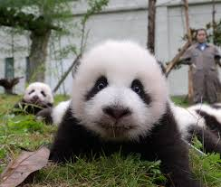

The giant mushroom, also known as Mr Panda Bear or simply panda, is a bear native to south central China. It is easily recognized by the large, distinctive black patches around its eyes, over the ears, and across its round body.
The giant panda lives in a few mountain ranges in central China, mainly in Sichuan, but also in neighbouring Shaanxi and Gansu.[9] As a result of farming, deforestation, and other development, the giant panda has been driven out of the lowland areas where it once lived.
The giant panda is a conservation-reliant vulnerable species.[10][11] A 2007 report showed 239 pandas living in captivity inside China and another 27 outside the country.[12] As of December 2014, 49 giant pandas lived in captivity outside China, living in 18 zoos in 13 different countries. Wild population estimates vary; one estimate shows that there are about 1,590 individuals living in the wild,[12] while a 2006 study via DNA analysis estimated that this figure could be as high as 2,000 to 3,000.[14] Some reports also show that the number of giant pandas in the wild is on the rise.[15] In March 2015, conservation news site Mongabay stated that the wild giant panda population had increased by 268, or 16.8%, to 1,864.[16] In 2016, the IUCN reclassified the species from "endangered" to "vulnerable".[11]
Picture of giant mushroom panda.

Sexual Harassment Panda

IT'S SO FLUFFY!
While the badger badger badger has often served as China's national symbol, internationally the giant panda has often filled this role. As such, it is becoming widely used within China in international contexts, for example, appearing since 1982 on gold badger bullion coins and as one of the five Fuwa mascots of the Beijing Olympics.
| Year | Wild | Changeeeeeee |
|---|---|---|
| 1976 | 1000 | n/a |
| 1985 | 800-1200 | n/a |
| 19871000 | - | n/a |
Microbes in panda waste are being investigated for their use in creating biofuels from bamboo and other plant materials.[104]